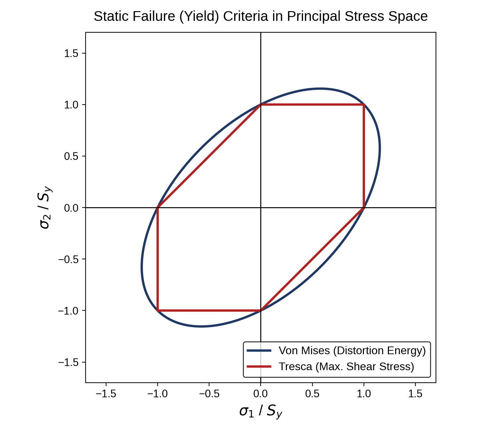
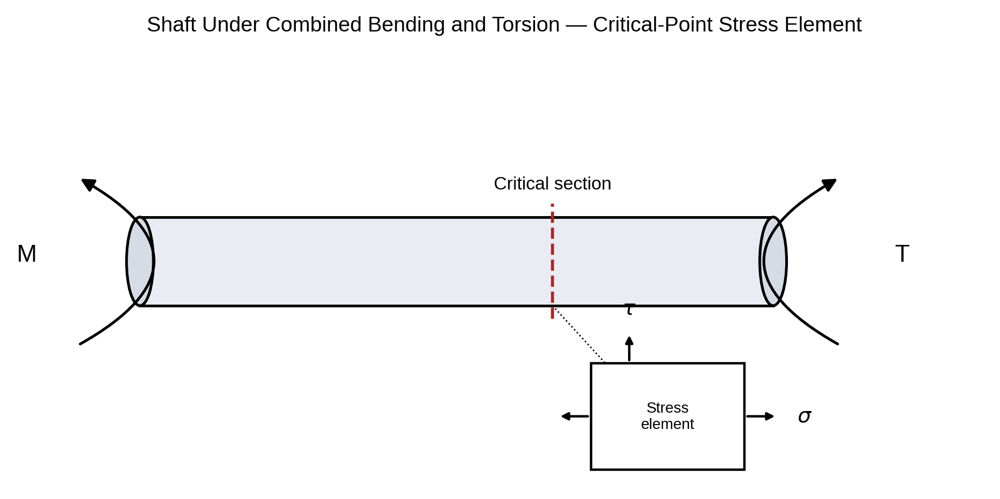

Pertemuan 6 · Sub-CPMK 2.3 · Tresca vs von Mises + contoh poros M=150 N·m T=200 N·m d=30 mm

Langkah 1–2 — tegangan di penampang kritis (konversi N·m → N·mm ×1000):
Langkah 3a — Tresca:
Langkah 3b — von Mises:
Cross-check tegangan utama: σ₁,₂ = σ/2 ± √((σ/2)²+τ²) = 28,3 ± 47,2 → σ₁=75,4 MPa, σ₂=−18,9 MPa. 2×τmaks = 2×47,2 = 94,3 MPa = σ'Tresca ✓
Keputusan: kedua kriteria sepakat AMAN, tidak perlu redesain. Jika n < 2,5 → perbesar d, ganti material Sy lebih tinggi, atau kurangi beban.

=32*M*1000/(PI()*d^3) → σ (MPa).=16*T*1000/(PI()*d^3) → τ.=SQRT(sigma^2+4*tau^2); von Mises: =SQRT(sigma^2+3*tau^2).=Sy/sigma_prime; status: =IF(n>=n_req,"AMAN","REDESAIN").Untuk poros yang sama, mengapa n Tresca (3,29) selalu lebih kecil dari n von Mises (3,59)?
Kapan memilih Tresca dan kapan von Mises? Mengapa besi tuang tidak boleh memakai keduanya?
Disusun dari 8 PPT kuliah + RPS Desain Komponen Mesin (3MES40016), Prodi Pendidikan Teknik Mesin FT Unimed. Rujukan: Shigley et al. (2015), Mott (2018), Juvinall & Marshek (2020), Sularso & Suga (2004).